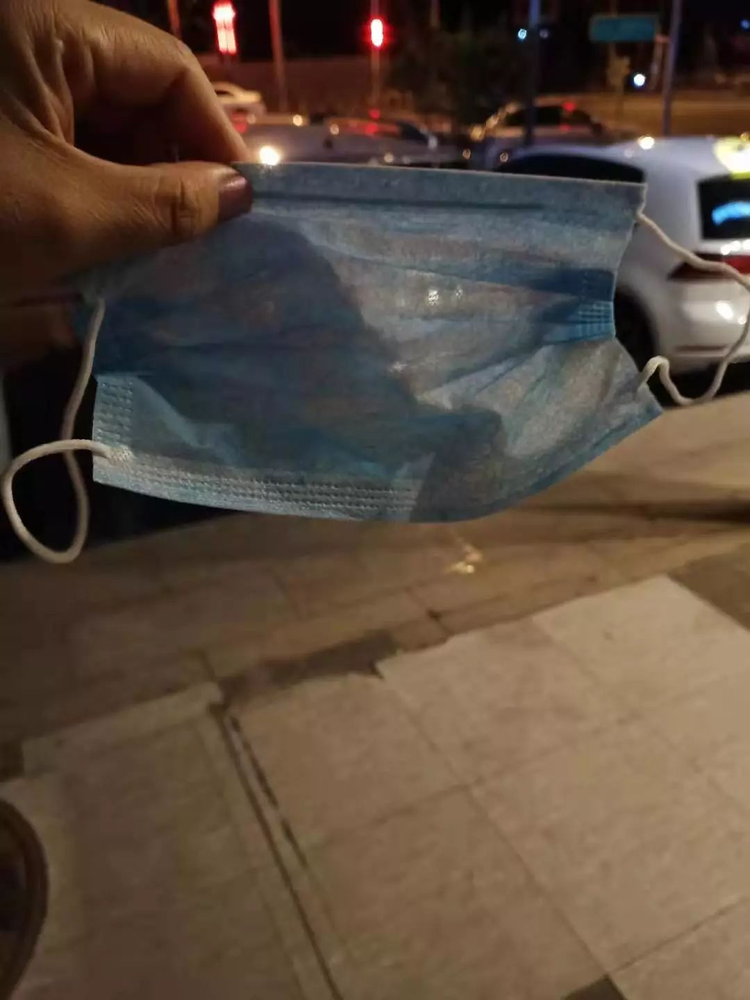
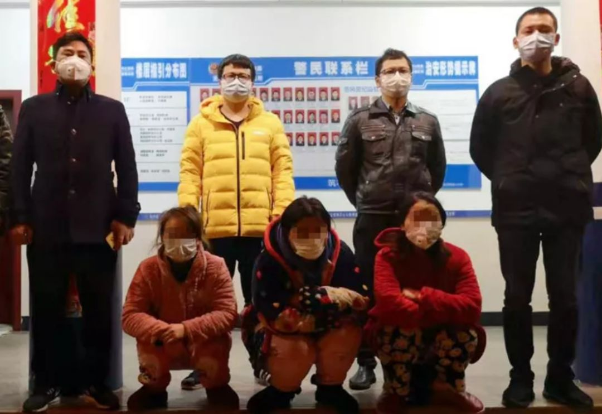

口罩比高铁票难买
原文链接 备份链接 23.01.2020本文字数：1298，阅读时长大约2分钟 导读：比春运期间高铁票更难买的东西，是新型冠状病毒蔓延时期的口罩。 作者 | 第一财经 段倩倩 比春运期间高铁票更难买的东西，是新型冠状病毒蔓延时期的口罩。 …

记者从河南省长垣市公安局获悉，涉事“黑”作坊负责人已被警方刑事拘留。然而，在警方切断了这一条假冒伪劣口罩的生产线后，湖南、湖北、河南、安徽、辽宁等地有消费者反映，自己购买到疑似假冒的“飘安”口罩。
全文3354字，阅读约需6.6分钟

▲湖南长沙市场流入的假冒伪劣“飘安”口罩，用手轻扯即破。受访者供图
薄薄一层如纱般的口罩，未经任何杀菌消毒，被工人们徒手装进印有“河南飘安集团有限公司”字样的包装袋中。这是近日在网络上引发关注的一段视频，生产口罩的作坊内阴暗嘈杂，原材料和半成品散落一地，卫生状况令人担忧。
新京报记者从河南省长垣市公安局获悉，涉事“黑”作坊负责人已被警方刑事拘留。然而，在警方切断了这一条假冒伪劣口罩的生产线后，湖南、湖北、河南、安徽、辽宁等地有消费者反映，自己购买到疑似假冒的“飘安”口罩。
新京报记者了解到，目前多地公安、市场监管部门接到消费者投诉后介入调查，并对涉事商户进行查处。其中，河南省长垣市检察院对7名制售假冒伪劣口罩者批准逮捕。

▲长垣警方捣毁的假冒伪劣口罩生产小作坊，无任何杀菌消毒设备。视频截图
━━━━━
药店所售口罩一扯即破，消费者举报
连日来，北京、湖南、湖北、河南、四川、安徽、沈阳等地的消费者向新京报记者反映，他们在药店或超市买到了疑似假“飘安”牌口罩。
2月4日，湖北麻城的胡先生告诉新京报记者，其日前在当地一家药店购买了一包一次性口罩，透明的包装袋上印有两条交叉的蓝色条纹，口罩品牌及名称显示为“飘安”牌一次性使用口罩，每包20只，每只口罩多为薄薄一层，如薄纱一般，手轻轻一扯即破。
胡先生表示，当地还有其他药店售卖此类口罩。2月1日，他向市场监督管理局报案。当时麻城市市场监督管理局工作人员回复称，其买的是假冒伪劣口罩，目前费用已经退还，涉事商户也已受到处罚。对于假冒口罩来源，当地仍在调查。
2月5日，家住北京丰台区的孙先生告诉新京报记者，为做好疫情预防，他于1月23日下午，在丰台翠林小区东门元亨利康大药房，共花费56元购买了两袋“飘安”一次性口罩，每袋有10多只，颜色分别为紫色和蓝色。
孙先生说，起初自己并未在意口罩数量、生产厂家以及薄厚程度，后来在看到相关新闻报道后，发现自己购买的口罩疑似假冒伪劣。经检查，他购买的口罩包装未印生产日期和保质期，也没有检验合格证。
新京报记者注意到，上述受访者购买的“飘安”口罩包装袋上印有河南飘安集团有限公司联系方式。记者拨通电话后，对方称其并未生产过该包装及该颜色的口罩，认为消费者购买的口罩为假冒伪劣产品。目前，孙先生已经向北京市12345市民热线举报，等待相关部门处理。

▲孙先生在元亨利康大药房购买的“飘安”口罩只有一层。受访者供图
━━━━━
药店：上架销售前未检验，已报警
市民姜女士说，1月23日傍晚，她在北京市朝阳路百好堂大药房七分店购买了四包“飘安”口罩共计80元。口罩质地同样只有薄薄一层，无防菌作用。
对此，涉事百好堂大药房母公司——北京百好堂医药经营有限公司一名负责人回应称，由于疫情蔓延，药店内的口罩一时间变得紧俏甚至脱销。公司方面从批发商处购进口罩后，未严格检查便上架销售，目前已开始召回，消费者持购买口罩凭证和口罩到其连锁药店，工作人员均会处理。
“我们也是受害者。”上述负责人表示，目前其公司针对假冒伪劣“飘安”口罩一事已经向市场监督管理局和公安报案，正在等待执法部门追查口罩生产窝点和具体处理结果。
新京报记者向涉事药店所在地的市场监管部门以及北京市12345市民热线反映，对方表示目前正在调查。

▲电商平台上有商户售卖“飘安”口罩，并称假一赔十。网络截图
━━━━━
有电商涉嫌逃避平台监管售卖假口罩
除了线下超市、药店，部分电商及微商也涉嫌售卖假冒伪劣口罩。北京市民孙先生告诉新京报记者，1月25日，其妻子在某电商平台上的一家名为“伊睿雅配饰专营店”里购买了“飘安”牌口罩，98元1包，20只装。之后，关注了相关新闻报道，发现所购口罩与报道中的假冒口罩基本一致。
孙先生说，其事后联系涉事网店反映该问题，但对方一直为系统回复。“就是希望商家召回口罩，平台和执法部门对商户做出处罚，并追查货源。”
2月2日至4日，新京报记者注意到，涉事电商仍正常营业，但已将所有口罩下架。对于孙先生反映的情况，涉事电商的人工客服回应称正在处理。2月6日下午，某电商平台客服表示，孙先生的情况会转交专员处理。
此外，新京报记者以“飘安”“飘安口罩”为关键词在多家电商平台上检索，发现平台已经对关键词相关的商品屏蔽或下架。还有电商平台发布“口罩禁令”，截至2月4日，永久清退15家涉嫌销售问题口罩店铺，并将5家商铺移交执法机关处理。
新京报记者注意到，即使在这种情况下，仍有电商通过变更商品信息、错开关键词等销售假“飘安”口罩，所售口罩颜色各异，有黑色、粉红色、黄色等，甚至还有商家在商品详情页面标出假一赔十、七天无理由退货字样。
新京报记者就上述情况向电商平台客服反映，对方表示将会处理相关问题。

▲某电商平台商户修改商品信息，逃避平台关键词监管。网络截图
━━━━━
超200万只假飘安口罩流入市场被查
有关假“飘安”牌口罩流入市场一事，新京报记者梳理发现，1月29日，浙江省台州市椒江区市场监督管理局根据相关线索对某医疗器械有限公司进行检查，发现24万只假“飘安”口罩，并予以查扣；1月30日，安徽省肥东县市场监管局接群众举报，对合肥市玉永大药房连锁有限公司肥东三店正在销售的假冒伪劣“飘安”口罩进行查扣。
此外，河南漯河、辽宁桓仁、福建莆田以及湖南长沙均查出假“飘安”口罩流入市场并销售。2月5日下午，新京报记者从湖南省长沙市警方了解到，在警方近日侦办的假冒伪劣口罩案件中，涉及已销售的假冒伪劣“飘安”口罩近200万只。
长沙警方举例介绍，1月23日，长沙市高桥医药流通园康美源保健品店店主张某光为牟取暴利，在明知是假货的情况下，以0.3元/只的价格，从非法渠道购进假冒伪劣的飘安牌医用口罩106万只。次日，张某光转手以0.75元至1元/只的价格将106万只口罩销售至长沙、娄底、岳阳、衡阳等地的多个下线客户，销售金额达到78万余元，非法获利45万余元。之后，这些口罩流入诊所、药店、超市以及微商的手中。目前，警方将该案的5名犯罪嫌疑人控制，并查获5家售假门店。

▲湖南长沙警方将销售假口罩的犯罪嫌疑人控制。受访者供图
针对有人通过微信销售假冒口罩的情况，长沙警方介绍，在另一起案件中，警方查明：犯罪嫌疑人张某将85万只假冒伪劣飘安牌医用口罩以0.06元/只的价格销售给高桥大市场新政百货的经营者匡某，匡某以0.12元至0.25元/只的价格销售给崔某奎和刘某，崔某奎又以1元/只的价格销售给刘某凡，刘某凡再以3元/只的价格通过微信进行销售。
警方介绍，这些假冒伪劣口罩只有极为轻薄的两层疑似纸浆层，没有防护层，无法起到有效防护的作用。目前，该案6名犯罪嫌疑人被控制，4家售假门店被查，涉及已销售的假冒医用口罩85万只。目前，该案仍在进一步侦办中。
━━━━━
河南长垣7名嫌疑人被批捕
河南长垣被称为“中国医疗耗材之都”。据央视报道，疫情发生后，河南长垣为了保障医用口罩和防护服的供应，70多家医用口罩生产企业召回员工。位于长垣的河南飘安集团有限公司官网显示，其公司生产的医疗卫生产品销售量占市场份额48％以上。
据河南飘安集团有限公司发布的声明，其生产的口罩以蓝色为主，少量白色，没有生产过粉色口罩，该集团生产的正规口罩名称为“一次性使用医用口罩”，产品包装数量都是10只，假冒的口罩名称是“一次性使用口罩”，每包为20只装，且每只正规“飘安”口罩上都有“PIAOAN”字样。
此前，河南飘安集团有限公司配合当地警方和市场监管部门查处多处“黑”窝点，警方对涉事人员做出刑事拘留的措施，并追查已售口罩数量。
2月5日，新京报记者从长垣市公安局获悉，2月4日21时，周某、谢某杰、张某辉、张某超、李某敏、苏某松、付某鑫等7人，分别因涉嫌销售假冒注册商标的商品罪、假冒注册商标罪被长垣市人民检察院依法批准逮捕，现羁押于长垣市看守所。
新京报记者 刘名洋 校对 翟永军
点击下图进入”全国新型冠状病毒感染肺炎实时地图“

*值班编辑 花木南*


本文未经新京报书面授权不得转载使用
欢迎朋友圈分享

原文链接 备份链接 23.01.2020本文字数：1298，阅读时长大约2分钟 导读：比春运期间高铁票更难买的东西，是新型冠状病毒蔓延时期的口罩。 作者 | 第一财经 段倩倩 比春运期间高铁票更难买的东西，是新型冠状病毒蔓延时期的口罩。 …
原文链接 备份链接 作者：刘倩 来源：*商业人物*（ID：*biz-leaders）* 截至2月4日6时，天津已有新型冠状病毒肺炎确诊病例66例，在动车客车段乘务车间和宝坻区百货大楼都出现了聚集性发病，企业复工和学校开学时间一再延期，至 …
原文链接 备份链接 图片:首批支援口罩运装完成，将送往合肥 受访者张进/摄 经济观察网 记者 阿茹汗 1月29日，当地时间5点45分，春秋航空9C8574次航班从泰国首都曼谷准时起飞，它的目的地是安徽省合肥市。 在机场外，送完机的张进终于 …
原文链接 备份链接 “如果当时大家都重视这个事情，或许不会有今天的疫情暴发。”李文亮说。 全文2320字，阅读约需4分钟 事发近一个月后，武汉公布疫情的8名“造谣者”，被中国疾控中心流行病学首席科学家曾光，称赞为“事前诸葛亮”。 其中一 …
原文链接 备份链接 在疫情防控的持续压力下，口罩的供给，尤其是防疫一线的供给情况依然紧绷。这背后既有制约企业生产的原料问题，民众也存在过度追求N95等专业口罩的误区，更有人借机囤积居奇，乃至造假售假。 全文3748字，阅读约需5.5 …